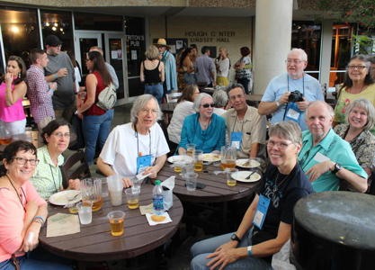

2018 Holiday Web Page

| Erich and Margie's 2018 Holiday Web Page | |
January We had 10 guests over for New Year's Eve. We attended Barb's New Year's brunch. We went to see Brian Smalley with the Brantons. Erich had his first EKG. It took us 7 months, but we re-watched all 251 episodes of "M*A*S*H". Erich ordered two candy bars from Japan for less than $1. Erich recommends Barb's French toast. Margie's word of the month is "integrity", easy to value in oneself, but hard to find in others.
February The Elusive Grape started using Erich's trivia questions every week. Erich won his $70 Super Bowl pool, and then the next day, lost about $10,000 in the stock market. At the Branton's, we dined with and listened to Naming the Twins. We attended Barb's annual Chinese New Year celebration. Erich watched a lot of curling and speed skating during the Winter Olympics. Erich received his last Christmas present from 2017. We celebrated National Pancake Day by going to IHOP and getting free pancakes. Erich recommends the browser game Slither. Margie's word of the month is "snag", as in to "snag an opportunity", or hitting a snag before you can realize that opportunity.
March We saw a national drug commercial filmed at the Deland dog park. During Margie's 45th reunion at Eckerd College, we saw old friends and toured the lovely campus, including new academic buildings, new student recreation facilities, and "South Beach". The Jolly Roger flag flew atop the chapel courtesy of Anonymous. We saw the Indigo Girls in concert. Margie put her iPod through the washing machine, but putting it in rice for a few days made it good as new. We took several walks by Mill Lake. We met Rick Mabry, a former visiting professor at Stetson, for lunch. We were VIPs at a baseball game courtesy of Barb. Erich sorted his shirts by color. We saw Brian Smalley perform at the Deland Art Show. And the day after we attended a Sam Pacetti living room concert at the Branton's. We met Erin and Tom for lunch in Orlando. Erich got a very complimentary retirement letter from one of his worst students. We celebrated Margie's birthday early with Barb and Missy. Erich recommends Barb's Nutella cake. Margie's word of the month is "nostalgia", as in listening to Gamble Rogers or attending her college reunion.
April We didn't do so well at our annual mini-golf tournament with friends. On one of our walks, we found an unopened can of carbonated alcoholic fruit punch, and Erich drank it. Margie had a nice birthday walk at Lake Woodruff. We went to see Danny Lynaugh play in New Smyrna with the Brantons. We went to a classical guitar ensemble at Stetson. We got our roof, house, and driveway pressure cleaned. We went canoeing at Blue Spring, and you can see some pictures here. We got our kitchen knives sharpened. Erich had an excellent birthday meal at Tamarind. Erich recommends dessert fondue at The Melting Pot. Margie's word of the month is "motivatin'", as in how she went over the hill.
May We began hosting monthly trivia nights at our place. Erich gave an oral final exam and a group final exam, and then retired. To celebrate we went to Gamblefest, where we enjoyed The Adventures of Annabelle Lyn, Passerine, Chelsea Saddler, Flagship Romance, Mean Mary, Dewey Via, and several more. Alas, the weather was worse than last year so we missed some acts like Verlon Thompson and Sam Pacetti. Margie rescued a frog in the sink drain of our guest bathroom. Margie got another dog, Pancho. Stetson's baseball team won their conference tournament and hosted their first ever regional, which they won before losing in the super-regionals. Margie saw some humorous signs. Erich recommends retirement. Margie's word of the month is "serendipity", as in forgetting her April word, then hearing "Maybeline".
June We went to see Brian Smalley play in Mount Dora. Erich got another crown at the dentist. Pancho became the fastest dog at the dog park. We had our roof repaired, and the ceiling of our porch redone. Erich started collecting "America the Beautiful" Quarters. By chance, we saw a former student Katie when she interviewed for a position at Stetson. Erich attended Regina's fabric art opening downtown. Pancho discovered how to get food off our counter. Our gopher tortoise burrow was occupied by an armadillo. Erich recommends turning pictures into cartoons. Margie word of the month is "doh!", as in, after spending several hours and $100 on new shoes, her foot discomfort is solved by a $5 pair of socks.
July We went to see Brian Smalley play in Port Orange. We had Pancho's DNA tested, and he is a purebred Plott Hound. We celebrated our 31st anniversary at Baskin-Robbins. (Get it? 31 flavors!) Erich got an email from Donald Knuth, the most famous computer scientist alive. Erich recommends hemp tea. Margie's word of the month is "estivate", typical Florida summer activity.
August Erich officially signed up for healthcare through the ACA website. That's pretty much all Erich had time for this month. Erich recommends the new TV show "A Million Little Things". Margie's word of the month is "vapid", as in Taylor Swift.
September At Chick-fil-A, Margie's chicken wrap contained no chicken. Our friend Barbara Bredis died suddenly of a cerebral hemorrhage. At the grocery store, Erich saw an employee holding a bird. There was a sink hole on the Stetson campus. Pancho had severe allergies leading to an infection. We went to the Sing Out Loud concert in St. Augustine, seeing Mr. Aullie, Caleb Joy, Dewey Via and his band, and Chelsea Saddler. Then in Port Orange we saw Larry Mangum, Bob Patterson, Jim Carrick, and Charley Simmons. Margie bought and enjoyed the book "Gamble Rogers: A Troubadour's Life". Erich recommends pumpkin pancakes with cinnamon roll filling and cream cheese icing. Margie's word of the month is "bellicose", the reaction she expected this month from Taylor Swift fans.
October We went to the Lake County Folk Festival in Eustis, seeing old favorites like Passerine and Lauren Lester, and finding some new gems like John R. Butler and Remedy Tree. Our appliances decided to celebrate Halloween. Margie's computer kept waking itself up, and producing "H2" whenever the "H" key was pressed. Erich's computer's hard drive failed with most of his data not backed up, but computer experts rescued him. Margie's electric toothbrush kept turning on by itself. Erich's printer box of knick knacks fell off the wall. Erich changed acid medication for the first time in over a decade. We saw Mean Mary in St. Augustine. Erich recommends donating to Wikipedia. Margie's word of the month is "pronk", as in the gait typical of a springbok (or a nutso Plott Hound).
November We went to the Fall County Jamboree in Barberville. Erich enjoyed watching the World Chess Championship, even if the American lost. We attended a large games party at Michael and Regina's place. We went to the Deland Art Festival, and saw Remedy Tree perform. Pancho had allergies again, leading to eternal allergy medicines. We spent Thanksgiving with Barb and Missy, playing Mah Jongg and eating like pigs. Margie found a curious plant. Erich recommends voting in every election. Margie's word of the month is "anticipation", as in the second photo below.
December We went to Mount Dora to see Brian Smalley play. We attended Jay and Marilyn's Christmas party. Erich went to a liqueur tasting party. Erich received an invoice for $0.00 for his January 2019 health insurance. We enjoyed the Dunn's pot-luck slide show of their visit to Morocco. Erich saw a mother, son, and daughter all exiting Publix with shopping carts full of cupcakes. We saw Brian Smalley play one more time in Sanford. We met Alison Northup, class of 1999, at Blue Spring State Park. We had lunch with Guy and Lauri, old friends from Stetson. Pancho was wounded by another dog at day care. Erich attended another one of the Dunn's games parties. We learned that Pancho doesn't like wearing a hat. Erich recommends Carol's homemade kumquat liqueur. Margie's word of the month is gratitude, for healthy food, solid shelter, and good friends. If we haven't seen you lately, come visit.
Erich's holiday puzzles can be found here. You can see our archive of previous holiday web pages here.
 


 |